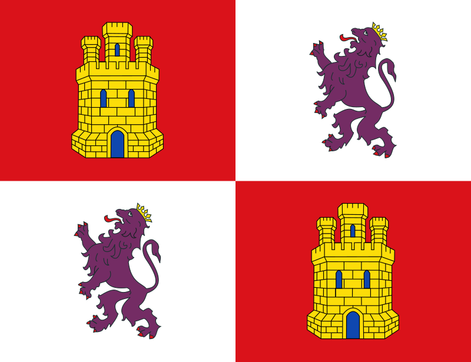
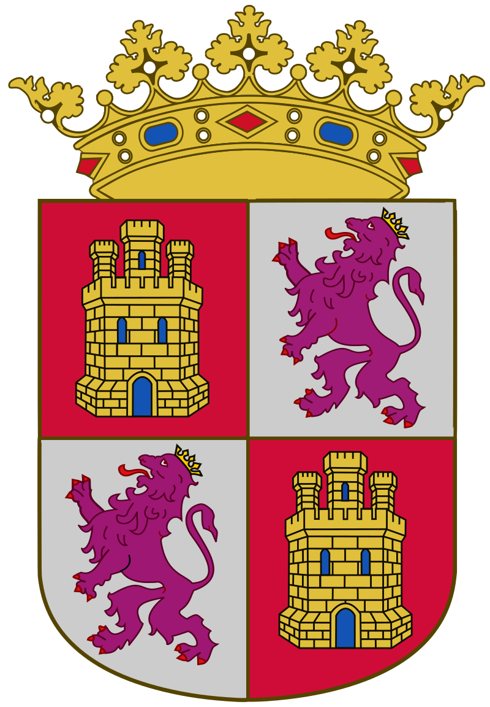
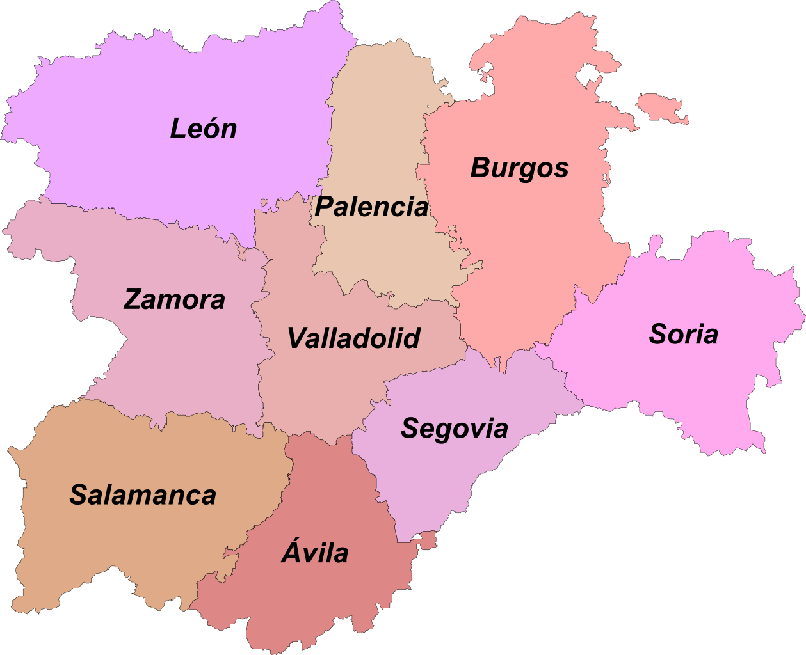

| Provincias | Informacion |
|---|---|
| Pagina Principal |
GUIA TURISTICA DE CASTILLA Y LEONBienvenido a esta pagina web creada por el alumno Jorge Manzanas Genicio en la asignatura Lenguaje de Marcas en zamora. Fecha:31/01/2022    Enlaces de interesAvilaBurgosLeonPalenciaSalamancaSegoviaSoriaValladolidZamora |
| Avila | |
| Burgos | |
| León | |
| Palencia | |
| Salamanca | |
| Segovia | |
| Soria | |
| Valladolid | |
| Zamora | |
| Pagina de contacto |